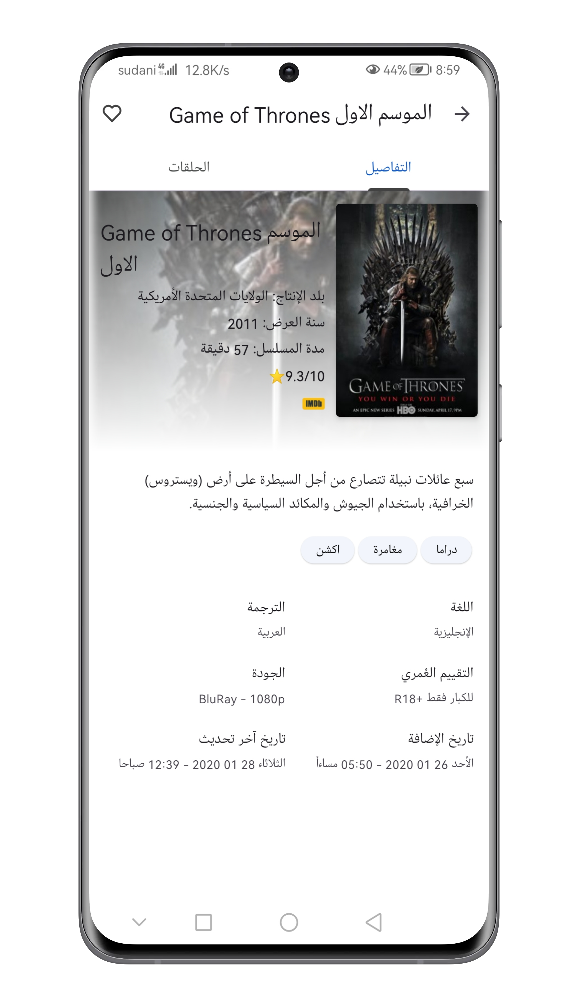
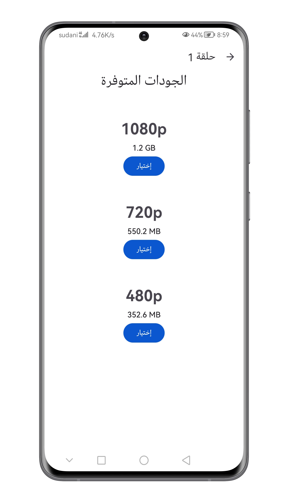

حول التطبيق
تم تطوير تطبيق Lite Movies بواسطة Mutwakil Suliman. يتيح التطبيق للمستخدمين تصفح مجموعة واسعة من الأفلام والمسلسلات من الإنترنت، مع خيارات متعددة للجودة والترجمة. جميع المحتويات المعروضة في التطبيق هي مواد منشورة علنًا على الإنترنت وتعود ملكيتها لأصحابها الشرعيين.
مميزات التطبيق

تصفح قائمة ضخمة من الأفلام مرتبة حسب التصنيفات والأنواع.

مشاهدة أحدث المسلسلات العالمية بتحديثات مستمرة.

عرض تفاصيل دقيقة عن كل عمل، بما في ذلك التقييم، اللغة، والملخص.

خيارات تحميل ومشاهدة بجودات مختلفة تناسب سرعة الإنترنت.